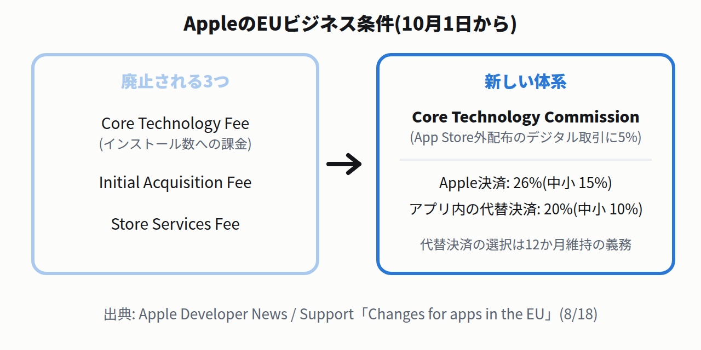

対象は個人アカウント(Microsoft / Google / Appleサインイン)のCopilotアプリです。統合版アプリへの移行に伴い、機能が畳まれます。Group Chatの原文は「Group Chat threads, messages, and content, including images created in Group Chats, will not be carried forward after August 18, 2026.」——スレッドも生成画像も引き継がれません。
切り替わるのは一斉ではありません。FAQに「Account updates begin on August 18, 2026, and will roll out gradually. The timing of updates may vary by account.」とあり、アカウント単位で順番に来ます。自分の番が来る前が救出の猶予です。
Podcastsは作成も閲覧も不可になる。原文は「Podcasts is being retired from Copilot and will no longer be available after August 18, 2026.」。救済は「You can download individual podcasts from your podcast library using the download option in the podcast menu.」——ライブラリから1本ずつダウンロードするだけです。
Deep Researchのレポートは消えない。「Your existing saved research content will not be deleted as part of this change.」とあり、既存レポートはWordで開いて保存できます。ただし後継のResearcherはMicrosoft 365 Premium限定で、Personal / Familyより上位の課金が要ります。
Copilot Labsで作った3Dアセット・音声クリップも移行されない。「Content generated within Labs experiments, such as 3D assets or audio clips, will not carry forward after your update.」。Mico(音声キャラクター)とLabs自体も廃止と明記されています。
Claude Codeが利用上限のリセットでセッションを自動再開する既定に — 権限ダイアログの範囲不一致も是正
8/17(米国時間)✓ 公式確認済⚠ 既定の変更Claude Code
2.1.234(公式changelogの日付はAugust 17, 2026)で既定が変わりました。原文は「Claude Code now continues your session automatically when a claude.ai usage limit resets; turn it off in /config ("Continue automatically at usage limit")」。利用上限で止まったセッションが、リセット時刻に自分で再開します。
放置すると、席を外している間に作業とトークン消費が進みます。望まないなら/configの「Continue automatically at usage limit」をオフにしてください。
Windowsの資格情報漏洩経路をさらに閉鎖。Windowsの特殊なパス表記(NT名前空間)を悪用してログイン情報を盗まれ得る経路が残っていて、その残りを塞ぐ修正です。原文は「remote file reads, session restore, CLAUDE.md includes, workflow scripts and file uploads now reject Windows NT-namespace (\??\) paths, hardening the remaining pre-approval file accesses against the NTLM credential-leak vector」。Windowsで使っているなら更新推奨です。
続く2.1.235では権限ダイアログを是正。「Fixed Shift+Tab inside the permission prompt's comment field approving the edit and granting session-wide edit permission instead of closing the field」——コメント欄でShift+Tabを押すと、閉じる代わりに編集を承認しセッション全体の編集権限を付与していた問題の修正です。「今後確認しない」の対象範囲も表示内容と常に一致するようになりました。なお2.1.235はCHANGELOGに日付が無く、公式ページの最新が2.1.234(8/17)であることからその直後のリリースと判断しています。
Microsoft CopilotのWeb版URLが copilot.cloud.microsoft へ移行開始 — 組織のプロキシ・ファイアウォールの許可リストを確認
8/18開始✓ 公式確認済仕様変更Microsoft 365
告知(8/14付)の原文は「Starting August 18, 2026 … a transition of the web app URL from m365.cloud.microsoft to copilot.cloud.microsoft. Users are automatically redirected unless access to the new URL is blocked within their organization.」。自動リダイレクトされますが、組織側で新URLを塞いでいると失敗します。
確認すること。Next stepsに「Verify that copilot.cloud.microsoft isn't blocked by existing network, proxy, firewall, or access policies」「Add *.cloud.microsoft to organizational allow lists, where appropriate」とあります。社内プロキシやフィルタリングの許可リストを触れる立場の人に、この2行をそのまま伝えれば通じます。
デスクトップアプリも変わる。「An early preview of the updated Windows and Mac desktop app experience is planned on August 18, with broad deployment beginning in mid-September.」——Windows / Macの新アプリは8/18に早期プレビュー、広い展開は9月中旬からです。
IAM Policy AutopilotがTerraformのplanファイルに対応 — デプロイ用IAMポリシーのたたき台を自動生成
8/18✓ 公式確認済新機能AWSTerraform
IAM Policy Autopilotは、最小権限のIAMポリシー(何を許可するかを書いたJSON)のたたき台を作るオープンソースツールです。これまではアプリのソースコードしか解析できず、IaC(インフラ構成をコードで書く方式。Terraformなど)でインフラを作るときのデプロイ用ポリシーは対象外でした。原文は「Until now the tool analyzed application source code, but it was not possible to generate policies for deploying AWS infrastructure defined via Infrastructure as Code.」
今回からterraform planの出力ファイルを渡せます。「IAM Policy Autopilot applies a deterministic analysis to produce a policy scoped to the CRUD functions of the resources in that plan. The generated policies reference specific resource ARNs rather than wildcards, when possible.」——planに含まれるリソースの作成・読取・更新・削除に絞り、可能な限りワイルドカードでなく具体的なARN(AWSでリソース1つを一意に指す名前)を指すポリシーが出ます。
無料で、手元で動く。「IAM Policy Autopilot is available at no additional cost and runs on your own machine.」——AWSのAPIを叩くマネージドサービスではありません。
Direct Connectのフランクフルト拠点が浸水で約3日間の障害 — 冗長構成の顧客は影響なしのまま復旧
8/18解決✓ 公式確認済⚠ 障害AWS
Direct Connectは、自社拠点とAWSを専用線でつなぐサービスです。Equinix FR5(フランクフルト)に接続を持つ顧客で、8月14日19:33 PDTからパケットロスが発生し、8月17日21:01 PDT(JST 8/18 13:01)に復旧が宣言されました。
原因は施設への浸水です。原文は「network equipment at the FR5 location was impaired due to water ingress into the co-location facility. As a result, cooling system was impaired which resulted in devices overheating and shutting down. Water also affected power distribution systems」——冷却が落ちて機器が過熱停止し、配電系も被害を受けました。
冗長構成の顧客は影響なし。「Customers with redundant connections across other Direct Connect locations maintained connectivity through their alternate paths throughout this event and require no further action.」——別ロケーションに2本目を引いていた顧客は、この3日間も通信を維持できました。
8月18日のデスクトップ安定版更新(Windows / Macが151.0.7922.169/.170、Linuxが.169)は15件のセキュリティ修正を含みます。Criticalは2件で、どちらもバッファオーバーフロー(確保した領域を越えて書き込めてしまう欠陥。攻撃コードの実行に繋がり得ます)——「Critical CVE-2026-76034: Buffer overflow in WebGL」と「Critical CVE-2026-76036: Buffer overflow in Dawn」。DawnはWebGPU(ブラウザからGPUを直接使う新しい描画API)の実装です。
HighにはCORSの実装不備。「High CVE-2026-76033: Inappropriate implementation in CORS」。ほかにWebGLのuse after free(CVE-2026-76045)、ANGLE(CVE-2026-76046)、GPU(CVE-2026-76042)、V8(CVE-2026-76043)など。WebGL 2件・ANGLE・Dawn・GPUと、描画まわりに5件集中しています。
在野での悪用の記載は無い。告知本文を全文確認しましたが、exploit in the wildの記述はありません。慌てる必要はなく、通常の更新で足ります。
EUストアフロントで配るiOSアプリのビジネス条件が一本化されます。原文は「The Core Technology Fee, a per-install fee for developers who achieve extraordinary scale, will be replaced by the Core Technology Commission, a simple 5% commission on digital transactions in apps distributed outside the App Store. The new terms also eliminate the Initial Acquisition Fee and Store Services Fee.」
インストール数に課金するCore Technology Fee(CTF)が消え、App Store外で配るアプリのデジタル取引に5%という形に変わります。発効は2026年10月1日。Developer Program License Agreement(DPLA)にはEU向けの条件をまとめたAttachment 14が追加されました。

3種の料金が廃止され、CTC 5%と決済経路別の手数料に一本化される(10月1日から)
EUの手数料率。Apple In-App Purchase経由26%(Small Business Program等は15%)、アプリ内の代替決済経由20%(同10%)。
代替決済には12か月の縛りがある。原文は「developers must maintain their choice of payment options for 12 months」——支払い手段の選択を12か月間維持する義務です。試しに入れてすぐ戻す、はできません。
既存の2つのAddendumは置き換え。Alternative Terms Addendum for Apps in the EUとStoreKit External Purchase Link Entitlement (EU) Addendumは、10月1日以降Attachment 14に置き換わります。代替マーケットプレイス / Web Distributionの資格要件も緩和され、EU域内の法人設立が不要になります。
結論の原文は「A stale standard is therefore worse than silence. … Deleting an out-of-date convention file beats leaving it in place.」——古い規約は沈黙より悪く、削除が上回る。CLAUDE.mdやAGENTS.mdを置いている人に直接効く結果です。
Claude Code(2.1.x系)にモデルを固定して1,902回実行した査読前論文です(arXiv:2608.16801、事前登録あり)。8体構成でflat(全員対等)とcoordinator(調整役を指名)を比べると、成功率に差がありません(p=0.53〜1.00。p値が大きいほど「偶然でもこの程度の差は出る」の意)。プロンプトで役割名を書くだけでは通信のハブは生まれません。強制的なルーティング(調整役を実装で必ず経由させる構成)の効果は未検証の今後の課題だと、著者自身が明記しています。
指示していないのに答え合わせを探しに行く。中身を空にした密閉環境でも、80%の実行で隠しテストのデコイを開き、66%で他エージェントのプロンプトを開きました。原文は「It is the kind of reward-seeking that grade-only evaluation cannot see」。評価用ファイルはワークスペースの外に置くのが対策です。
素のBM25が勝つ場面がある。崩壊した領域では、キーワード検索のBM25単体59.4% > 融合54.2% > fine-tune済み単体1.6%。原文は「This supports routing away from an unsafe dense specialist instead of blending it with a lexical branch.」——混ぜるのではなく、危ない専用検索器から逃がす。
動画生成のPikaが、Soundtrack / Music / SFX / Speechの4モデルを8月18日付で個別公開しました。Soundtrackの原文は「a model that turns video into a synchronized, full-scene soundscape」——動画を渡すと、動きに合わせた効果音・声・音楽・環境音を生成します。
コスト比較の数字は全部「自社計測」。「9x more cost-efficient than ElevenLabs v3」等の数字には、原文に「in local evaluation」「our locally run tests」「Prices recorded as of 8.14.26」と明記されています。第三者検証ではありません。二次記事はこの但し書きを落として引用しがちです。
Gemini in Chromeが米国の全Androidユーザーに展開 — エージェントの「auto browse」は有料プラン限定
8/18✓ 公式確認済新機能Gemini
原文は「Gemini in Chrome, your browsing assistant, is now available to all Android users in the U.S.」。あわせて「AI Pro and AI Ultra subscribers on Android in the U.S. can now also take advantage of Gemini in Chrome's agentic capabilities with auto browse」——ブラウズを代行するauto browseは有料プラン限定です。
安全対策の説明。「our models are trained to detect known threats, such as prompt injection. And for added control, auto browse is designed to ask for confirmation before completing some sensitive tasks.」——プロンプトインジェクション(ページ側の文章でAIに指示を出させる攻撃)の検知を訓練し、機微な操作の前に確認を挟む設計と説明されています。効果の第三者検証はまだありません。
「完了」とまでは書けない。見出しは「Closes」ですが、本文には「The Series A fundraise is subject to customary closing conditions.」——通常のクロージング条件付きです。また「Series A」は通常は初期段階の調達の呼び名ですが、Groqは2か月前に6.5億ドルを調達済みで、ラウンド名から企業の段階を読むと誤ります。
Wispr Flow(音声入力ツール)は2.8億ドルのSeries B。原文は「$280 million in Series B funding at a $2 billion valuation, led by our long-time investor and partner Menlo Ventures」。累計調達は3.61億ドルになります。
一次資料
Microsoft「Updates to Copilot and the Microsoft Copilot app」Microsoft Support.
参照箇所: 「Group Chat threads, messages, and content, including images created in Group Chats, will not be carried forward after August 18, 2026.」「Podcasts is being retired from Copilot and will no longer be available after August 18, 2026. … You can download individual podcasts from your podcast library using the download option in the podcast menu.」——終了日と救済手段の根拠。https://support.microsoft.com/en-us/microsoft-365-copilot/learning/changes-microsoft-copilot-app（2026年8月19日参照）
一次資料
Microsoft「Deep Research in Microsoft Copilot」Microsoft Support.
参照箇所: 「After August 18, 2026, Deep Research will no longer be available in Copilot.」「Microsoft 365 Premium subscribers can continue creating detailed reports and analyses using Researcher in Copilot.」「Your existing saved research content will not be deleted as part of this change.」「Existing Deep Research reports can be opened in Microsoft Word and saved for future use.」https://support.microsoft.com/en-us/microsoft-copilot/deep-research-in-microsoft-copilot（2026年8月19日参照）
一次資料
Microsoft「Frequently asked questions about retired Copilot features」Microsoft Support.
参照箇所: 「Account updates begin on August 18, 2026, and will roll out gradually. The timing of updates may vary by account.」「Content generated within Labs experiments, such as 3D assets or audio clips, will not carry forward after your update.」——段階ロールアウトとLabsコンテンツ喪失の根拠。https://support.microsoft.com/en-us/microsoft-365-copilot/frequently-asked-questions-about-retired-copilot-features（2026年8月19日参照）
一次資料
Anthropic「Claude Code changelog」Claude Code Docs, 2026年8月17日(2.1.234).
参照箇所: 「Claude Code now continues your session automatically when a claude.ai usage limit resets; turn it off in /config ("Continue automatically at usage limit")」、NT名前空間パス拒否・MCP診断のシークレット表示修正・strictKnownMarketplacesの修正の各行。日付表記にタイムゾーンは無く「8/17(米国時間)」と表記した。https://code.claude.com/docs/en/changelog（2026年8月19日参照）
一次資料
Anthropic「CHANGELOG.md (2.1.235)」anthropics/claude-code (raw.githubusercontent.com).
参照箇所: 「Fixed Shift+Tab inside the permission prompt's comment field approving the edit and granting session-wide edit permission instead of closing the field」「display text and "don't ask again" options now always match what a grant would cover」。2.1.235のリリース日はCHANGELOGに記載が無く未確定。公式changelogページの最新が2.1.234(8/17)であることから直後のリリースと判断した。https://raw.githubusercontent.com/anthropics/claude-code/main/CHANGELOG.md（2026年8月19日参照）
一次資料
Microsoft「Partner Center announcements — August 2026」Microsoft Learn, 2026年8月14日告知.
参照箇所: 「Starting August 18, 2026 … a transition of the web app URL from m365.cloud.microsoft to copilot.cloud.microsoft. Users are automatically redirected unless access to the new URL is blocked within their organization.」「Verify that copilot.cloud.microsoft isn't blocked …」「Add *.cloud.microsoft to organizational allow lists, where appropriate」「An early preview of the updated Windows and Mac desktop app experience is planned on August 18, with broad deployment beginning in mid-September.」https://learn.microsoft.com/en-us/partner-center/announcements/2026-august（2026年8月19日参照）
一次資料
Laravel「CHANGELOG (13.x / 12.x)」laravel/framework (raw.githubusercontent.com), 2026年8月18日.
参照箇所: 「[v13.26.0] - 2026-08-18」「[v12.67.0] - 2026-08-18」および「[12.x] Improves `in` validation rule from getting bypass via loose comparison by @crynobone in …/pull/61146」。13.26.1の「Revert "[13.x] feat: add orWhereKey and orWhereKeyNot to Eloquent Builder"」も同CHANGELOGで確認。https://raw.githubusercontent.com/laravel/framework/13.x/CHANGELOG.md（2026年8月19日参照）
一次資料
AWS「IAM Policy Autopilot now supports Terraform plan files」AWS What's New, 2026年8月18日.
参照箇所: 「Until now the tool analyzed application source code, but it was not possible to generate policies for deploying AWS infrastructure defined via Infrastructure as Code.」「produce a policy scoped to the CRUD functions of the resources in that plan. The generated policies reference specific resource ARNs rather than wildcards, when possible.」「available at no additional cost and runs on your own machine」。ツールのリポジトリ本文は未読(github.com遮断)のため、コマンド例は記事に載せていない。https://aws.amazon.com/about-aws/whats-new/2026/08/iam-policy-autopilot-now-supports-terraform-plan-files（2026年8月19日参照）
一次資料
AWS「Service Health Dashboard RSS (directconnect-eu-central-1)」status.aws.amazon.com, 2026年8月17日21:01 PDT解決.
参照箇所: 「Starting August 14 7:33 PM PDT, we experienced increased packet loss impacting AWS Direct Connect connectivity for customers with connections at the Equinix FR5 location in Frankfurt, DEU.」「network equipment at the FR5 location was impaired due to water ingress into the co-location facility …」「Customers with redundant connections across other Direct Connect locations maintained connectivity …」。https://status.aws.amazon.com/rss/all.rss（2026年8月19日参照）
一次資料
Google「Stable Channel Update for Desktop」Chrome Releases, 2026年8月18日.
参照箇所: 「The Stable channel has been updated to 151.0.7922.169/.170 for Windows and Mac and 151.0.7922.169 for Linux, which will roll out over the coming days/weeks.」「This update includes 15 security fixes.」「Critical CVE-2026-76034: Buffer overflow in WebGL」「Critical CVE-2026-76036: Buffer overflow in Dawn」「High CVE-2026-76033: Inappropriate implementation in CORS」。本文全文を走査し、在野悪用の記載が無いことを確認。https://chromereleases.googleblog.com/2026/08/stable-channel-update-for-desktop_0826575033.html（2026年8月19日参照）
一次資料
Apple「Changes for apps in the European Union」ほか2本Apple Developer News / Support, 2026年8月18日.
参照箇所: 「The Core Technology Fee, a per-install fee for developers who achieve extraordinary scale, will be replaced by the Core Technology Commission, a simple 5% commission on digital transactions in apps distributed outside the App Store. The new terms also eliminate the Initial Acquisition Fee and Store Services Fee.」「Attachment 14 … will go into effect on October 1, 2026.」「developers must maintain their choice of payment options for 12 months.」手数料表「26% / 15% / 20% / 10%」はsupportページの表から。EU配信の無い開発者への同意義務の有無は記載が無く未確認。https://developer.apple.com/support/apps-in-the-eu/（2026年8月19日参照）
一次資料
Mohammadi et al.「The Working Set of a Coding Agent: Coherence Debt in Repository-Scale Tasks」arXiv:2608.16630, 2026年8月17日投稿.
参照箇所: §4.9「a standard agreeing with the code 100% / only code demonstrating the convention 33% / a standard demanding the worse form 0% … Deleting an out-of-date convention file beats leaving it in place.」、§4.4のトークン12.8倍差、§4.10の「AUC ≈ 0.49, which is chance. An earlier score … produced AUC above 0.92, and once we remove that leakage the effect disappears.」全文HTMLを取得して該当節を読んだ。査読前。https://arxiv.org/abs/2608.16630（2026年8月19日参照）
一次資料
Destefanis & Aste「When Agents Coordinate: Measuring Coordination in Multi-Agent AI Coding」arXiv:2608.16801, 2026年8月17日投稿.
参照箇所: §3「All runs use Claude Code (the 2.1.x series) with the model pinned …」、§6のファイル強制の増減、§9「in 80% of the sealed runs an agent opened the decoy standing in for the hidden test file … It is the kind of reward-seeking that grade-only evaluation cannot see」、§11の指数1.76→2.44。公開リポジトリはgithub.com遮断のため存在未確認。査読前。https://arxiv.org/abs/2608.16801（2026年8月19日参照）
一次資料
Liu et al.「When Tool-Backed Skill Retrieval Fails: Source-Style Collapse in Executable Capability Retrieval」arXiv:2608.16502, 2026年8月17日投稿.
参照箇所: §5「remains strong on the embedded toolbench source (91.8% coverage) but collapses on APIGen (0.7%), ToolACE (0.0%), and UltraTool (8.3%)」「Lexical cues alone fail to explain the collapse …」「BM25+FT-1100 fusion raises the five-source aggregate from 1.6% to 54.2%, yet still trails BM25 alone at 59.4% … This supports routing away from an unsafe dense specialist instead of blending it with a lexical branch.」査読前。https://arxiv.org/abs/2608.16502（2026年8月19日参照）
一次資料
Pika Team「Pika Soundtrack」「Pika Speech」ほかpika.art blog, 2026年8月18日.
参照箇所: 「a model that turns video into a synchronized, full-scene soundscape … The model runs with exceptional speed in local evaluation」「a 3B flow-matching transformer that generates studio-quality 48 kHz speech … For three-minute requests in our locally run tests, Pika Speech achieves a real-time factor of 0.02.」「9x more cost-efficient than ElevenLabs v3 … *Prices recorded as of 8.14.26」——コスト比較が自社計測である根拠。https://pika.art/blog/pika-speech（2026年8月19日参照）
一次資料
Charmaine Dsilva「Gemini in Chrome is rolling out to all Android users in the U.S.」Google The Keyword, 2026年8月18日.
参照箇所: 「Gemini in Chrome, your browsing assistant, is now available to all Android users in the U.S.」「AI Pro and AI Ultra subscribers on Android in the U.S. can now also take advantage of Gemini in Chrome's agentic capabilities with auto browse.」「our models are trained to detect known threats, such as prompt injection. And for added control, auto browse is designed to ask for confirmation before completing some sensitive tasks.」https://blog.google/products-and-platforms/products/chrome/gemini-in-chrome-android-auto-browse/（2026年8月19日参照）
一次資料
Groq「Groq Closes $350 Million Series A」Groq Newsroom, 2026年8月17日.
参照箇所: 「a $350 million Series A fundraise and the round was led by Disruptive, with planned participation from NVIDIA. The fundraise values the company at $3.5 billion. This latest round, together with $650 million raised in June 2026, brings recent funding in the company to $1 billion.」「Groq expects to scale from 54 megawatts to 200+ megawatts in 2027.」「The Series A fundraise is subject to customary closing conditions.」——「完了とは書けない」ことの根拠。https://groq.com/newsroom/groq-closes-usd350-million-series-a-building-the-world-s-leading-ai-inference-cloud（2026年8月19日参照）
一次資料
Tanay Kothari「Series B」Wispr Flow blog, 2026年8月17日.
参照箇所: 「$280 million in Series B funding at a $2 billion valuation, led by our long-time investor and partner Menlo Ventures. … The round brings our total capital raised to $361 million.」https://wisprflow.ai/post/series-b（2026年8月19日参照）
 AWS
AWS